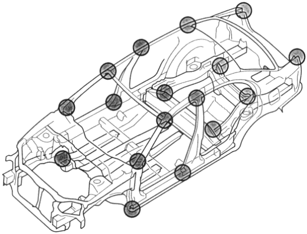

Accurate Inspection of Damaged Parts (Visual)
|
2-4 |
Most monocoque bodies are composed as a single until by welding together pressed parts made of steel plates, which come in a variety of different shapes and sizes. Each part is responsible for displaying a certain strength and durability in order that it may play its role in meeting the functions of the body.
Damage to the exterior of the body can be visually inspected, but where there has been external impact, it is necessary to inspect the extent of the damage. In some cases, the deformation may have spread beyond the actual areas that were in the collision so the deformation must be closely inspected.
Distortion to the vehicle, bends, inclines and gaps between parts should be thoroughly checked. Also, check for paint peeling at welded areas, corners and the sealing coat.
| : Carefully checked. |
